هوية التصميمDesign language
Deep pine green taken from hospital signage, and brass for the one thing that matters most: the number being called now. The same brass appears on the TV board, the doctor's "Call next" button and the patient's "It's your turn" message, so patients and staff learn one signal. One typeface (IBM Plex Sans Arabic, open licence, served from the server so it works without internet) covers Arabic and Latin. Ticket numbers are always written left-to-right with tabular digits so "A-015" never flips inside Arabic text.
Pine – headers, primary buttons#0E3B33
Brass – "now calling"#C8A04A
Sage – page background#E8EEE9
Ink – text#14211E
Red – no-show, cancel, closed#A8322B
Green – open, completed#2F7A4F
١. شاشة الاستقبال1 · Reception
Left column: the self-service QR code (it changes every 90 seconds so it only works inside the hospital) and the form for patients without a smartphone, with the priority option and verbal consent. Right column: every clinic's live status, then today's tickets with search, filters and actions: print, give priority, move to another clinic, cancel, and put a no-show back in the queue.
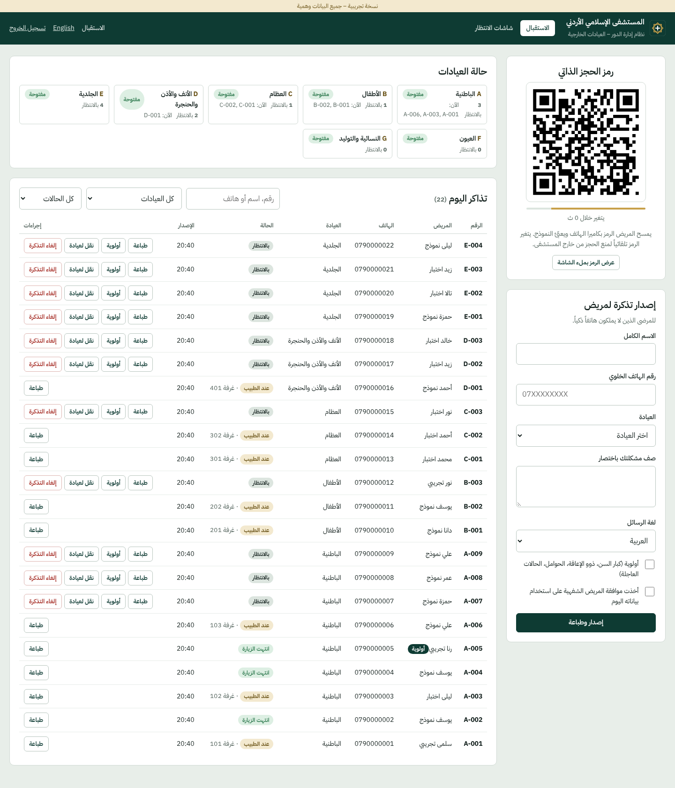
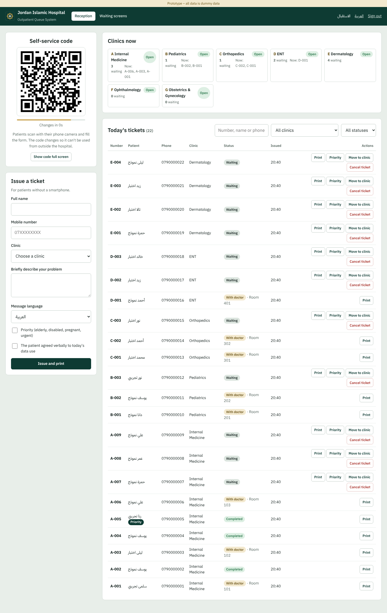
٢. شاشة قاعة الانتظار2 · Waiting-hall screen (TV, 1920×1080)
A board with one row per clinic: what is being served now and in which room (a clinic with three doctors shows three numbers), then the next numbers. When a doctor calls, a large brass card covers the board for 8 seconds and the voice announces in Arabic then English: "الرقم A 15، الرجاء التوجه إلى غرفة 101 – Number A 15, please go to room 101". Names are never shown or spoken. The screen is always bilingual.
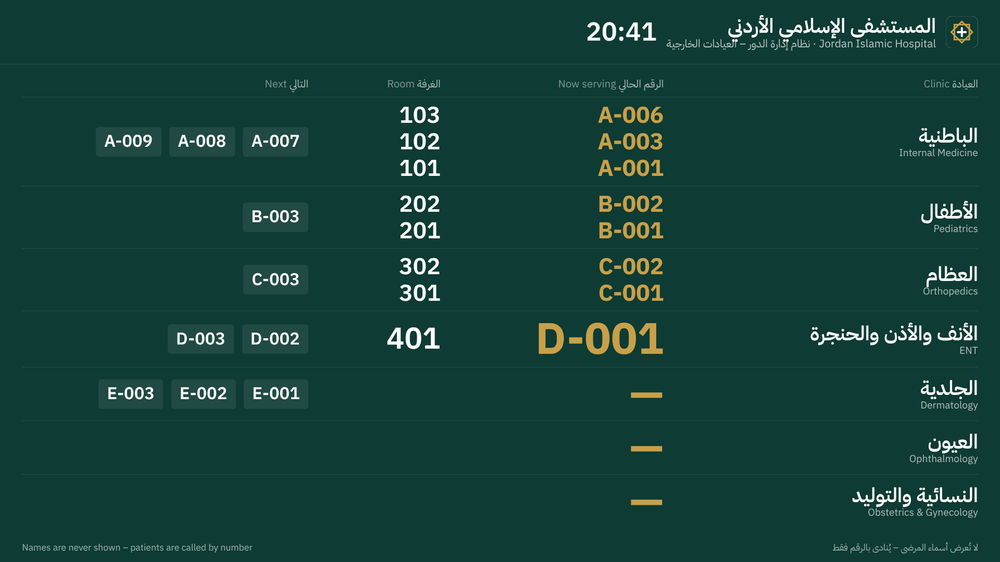
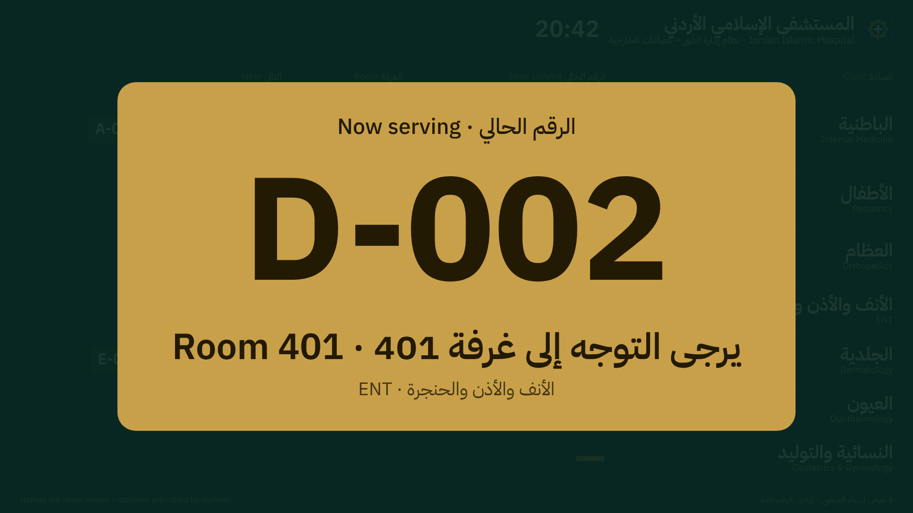
٣. لوحة الطبيب3 · Doctor dashboard
The current patient is shown large: ticket number, name, how long they waited, and the complaint they typed (shown only here). The main action, "End visit", is the widest button. "Didn't come" applies the rule: the first time the patient moves back 3 places, the second time they are marked a no-show. "Recall" repeats the announcement without changing the queue, and "Refer to clinic" sends the patient to another clinic's queue (urgent referrals go to the front). The shared clinic queue is on the left. Doctors start, pause and finish their shift from the top bar; a paused doctor receives no patients.
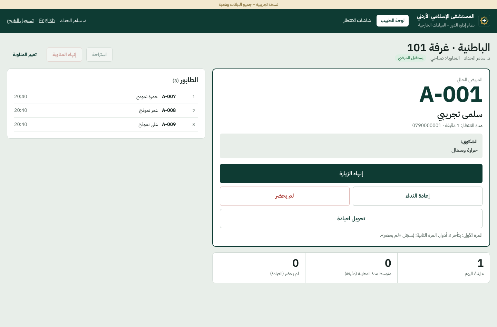
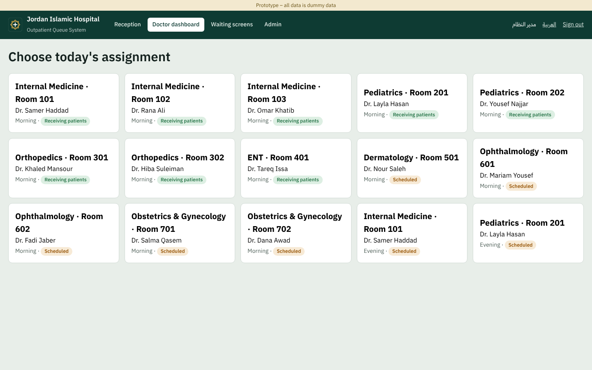
شاشات المريض على الهاتفPatient phone screens
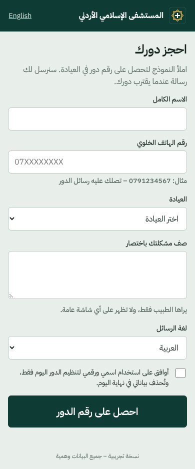
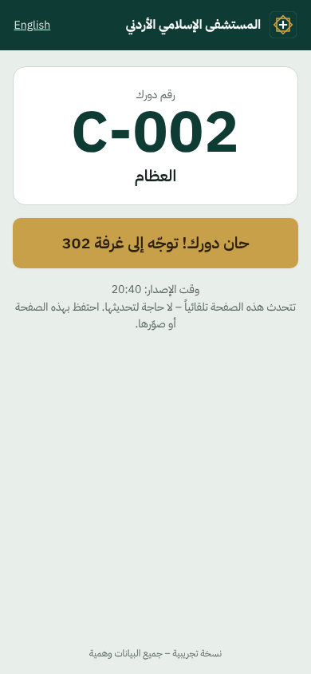
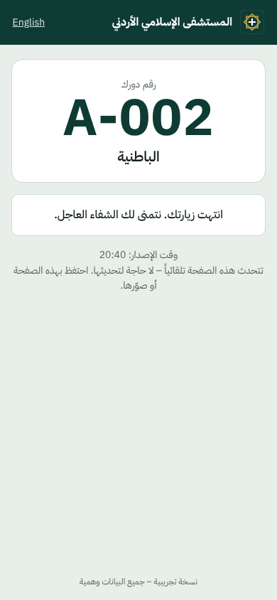
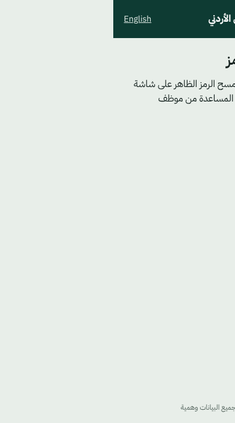
لوحة مدير النظامSystem admin
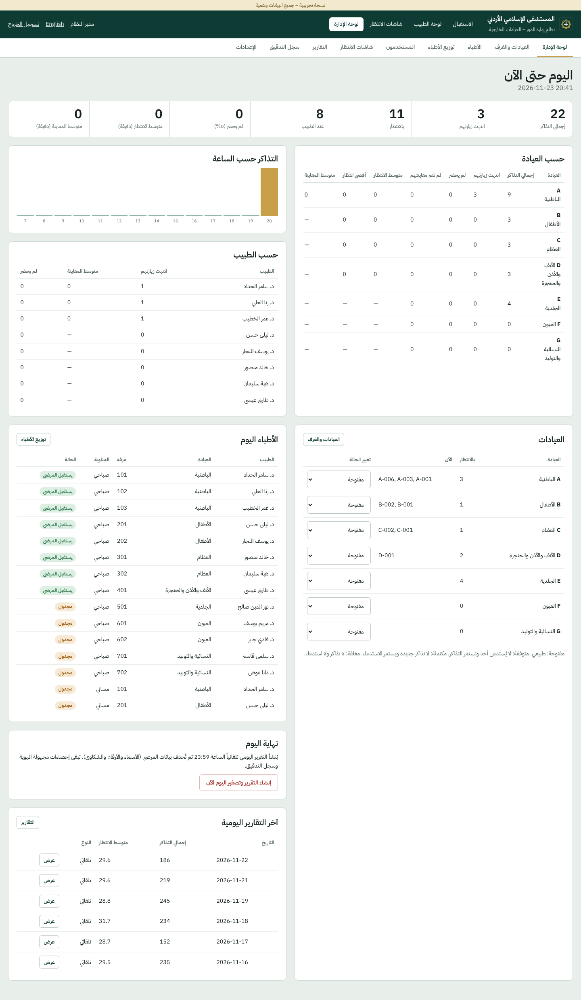
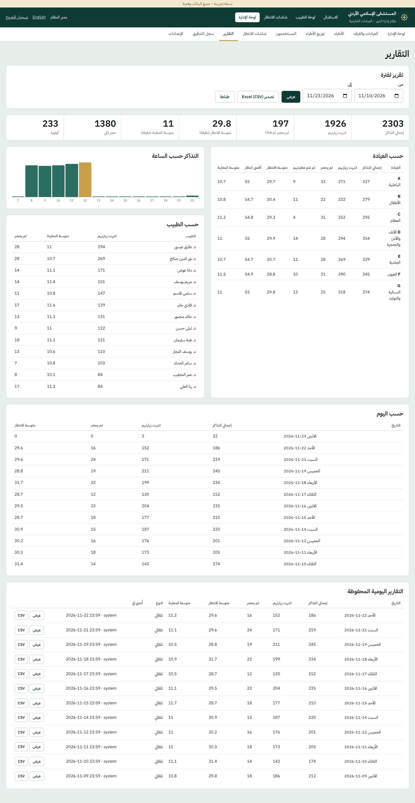
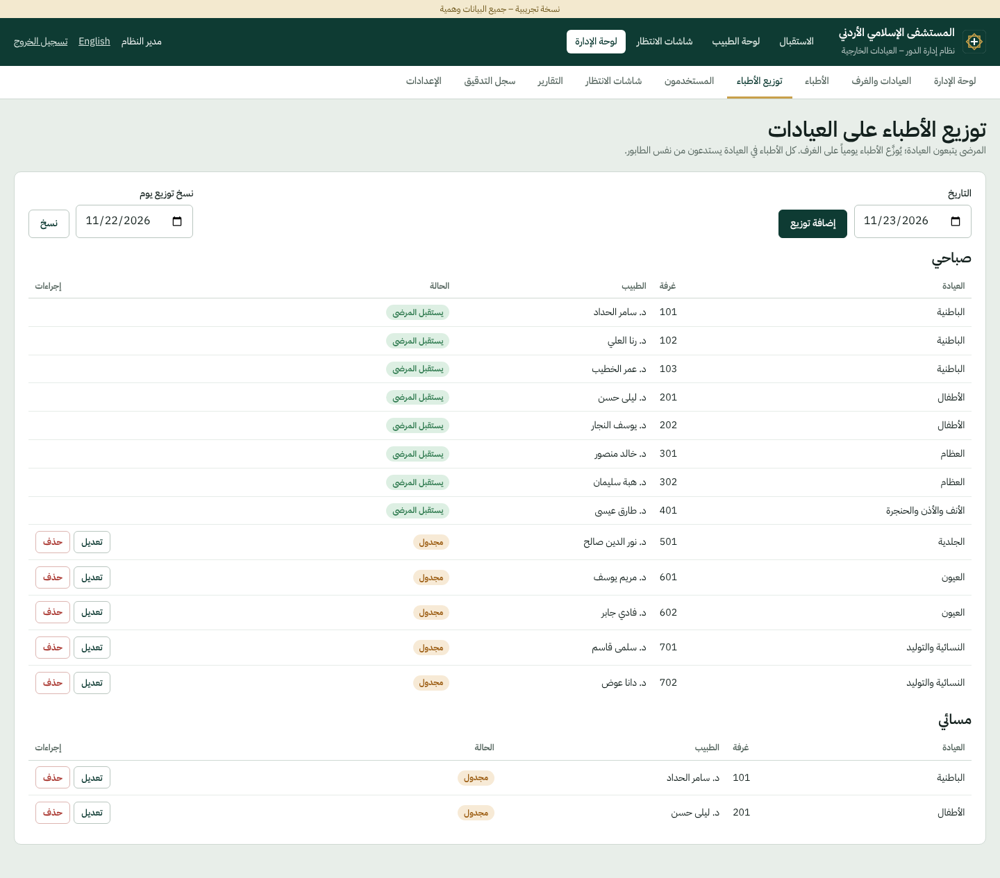
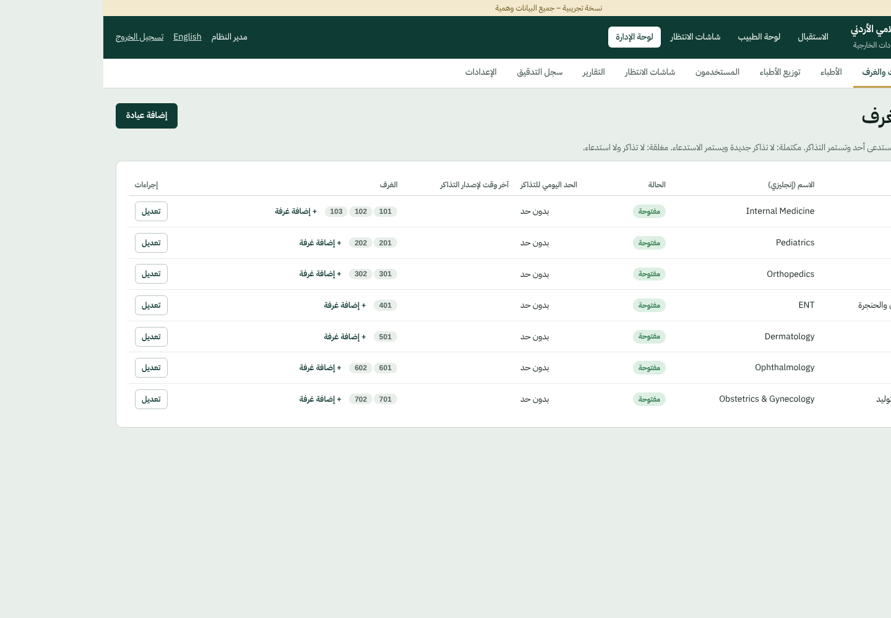
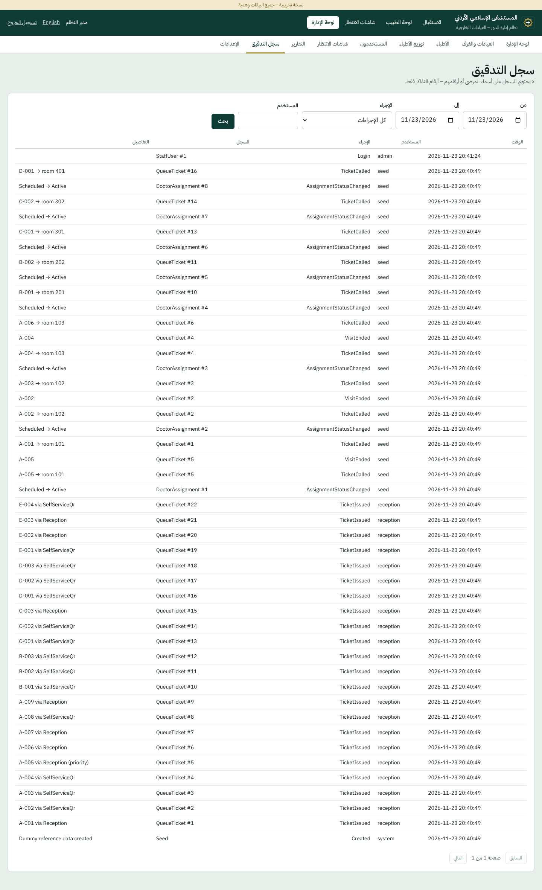
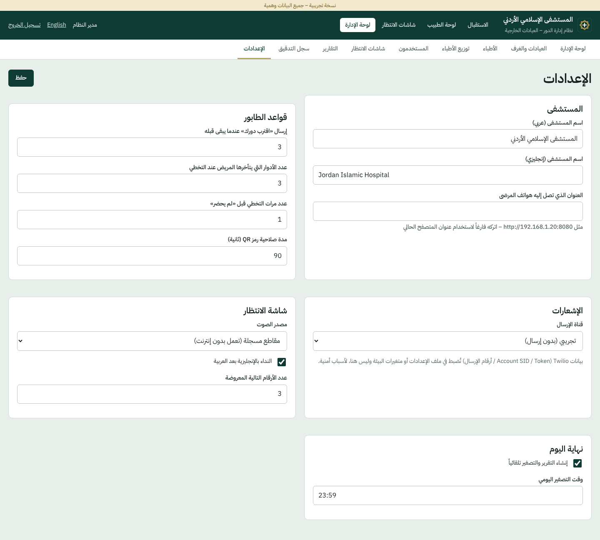
Folder screens/en has the English versions of the staff screens.